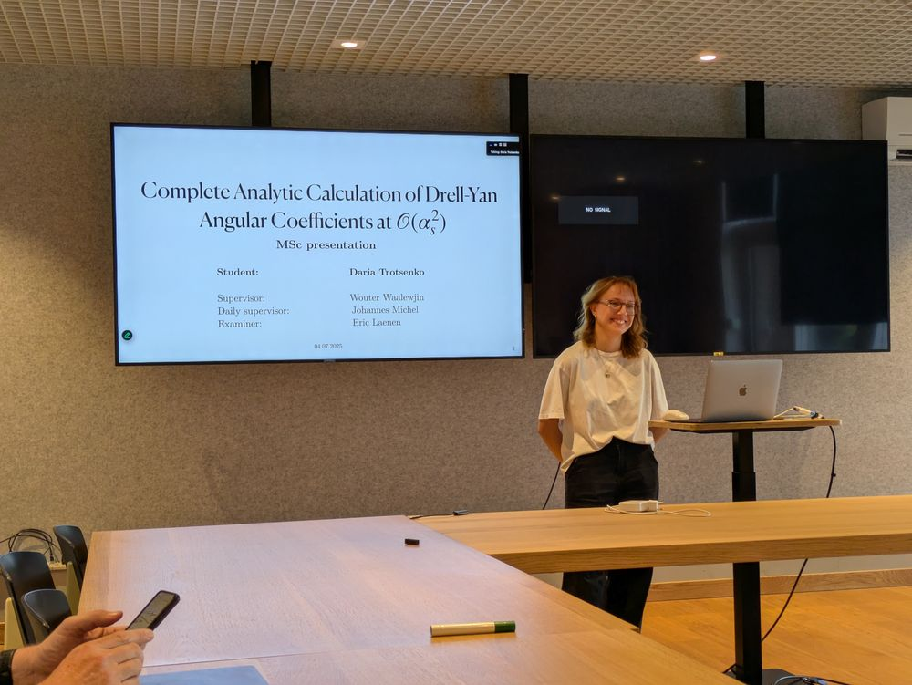

Research
Perturbative QCD, effective field theories, and collider phenomenology
Protons are made of quarks and gluons held together by the strong interaction, described by quantum chromodynamics (QCD). When protons are smashed together, or probed with electrons, the debris carries information about both the structure of the proton and the dynamics of QCD itself. My research is about making precise theoretical predictions for such collisions, mostly using effective field theories such as soft-collinear effective theory (SCET) and higher-order perturbative calculations.
Forward neutrons at electron–proton colliders
In a sizeable fraction of electron–proton collisions the proton turns into a neutron that continues almost undeflected along the beam direction. Traditionally this is described as the electron scattering off a pion that the proton has emitted (the Sullivan process), which has made forward neutrons an attractive way to measure the structure of the pion. Together with Stella Schindler (Los Alamos National Laboratory) I am developing a SCET-based factorization framework for forward neutron production in the small-x regime of ep → eXn. The goal is to understand the limitations of the pion-exchange picture and to work toward systematically improvable predictions for future lepton–hadron colliders such as the Electron-Ion Collider.
Drell–Yan angular coefficients at NNLO
In the Drell–Yan process a quark and an antiquark annihilate into a lepton pair. The angular distribution of the leptons is described by a set of angular coefficients that encode the polarization of the intermediate gauge boson, and they are a sensitive test of perturbative QCD. For my master's thesis at the University of Amsterdam and Nikhef, supervised by Wouter Waalewijn and Johannes Michel, I carried out the fully analytic calculation of the Drell–Yan helicity cross sections and angular coefficients through O(αs2), including a helicity-resolved NNLO prediction for the transverse-momentum spectrum. The project started during the DESY Summer Student Program in Hamburg with Frank Tackmann, Alessandro Gavardi, and Bahman Dehnadi. The thesis received the 2025 KHMW Young Talent Award in theoretical physics.
M.Sc. thesis (PDF) · defense slides (PDF)

Earlier projects
Axion detection with trapped ions
My bachelor's thesis (with Arghavan Safavi-Naini and Jordy de Vries) studied axion electrodynamics in Paul traps: an oscillating axion background induces a small displacement of a trapped ion, and I derived this displacement in terms of the axion parameters and estimated the region of parameter space that force-sensing experiments could reach. A follow-up summer project at the UvA Institute of Physics extended this to quantum trajectories, using master-equation and quantum-jump methods to look for ways to improve the sensitivity of ion-trap experiments.
Star formation in jellyfish galaxies
During the LEAPS Summer Program at Leiden Observatory I worked with Ashley Bemis, Ian Roberts, and Sarah Leslie on molecular gas and star formation in jellyfish galaxies — galaxies being stripped of their gas as they fall into clusters — using ALMA and MaNGA observations. This work contributed to a paper in The Astrophysical Journal.
Other
Fermi acceleration in a chaotic billiard (with Anatoli Polkovnikov), and determining the masses of binary UV-active active galactic nuclei (with Anatoliy Tugay).
Publications
- I. D. Roberts, M. Lang, D. Trotsenko, et al., LoTSS Jellyfish Galaxies. IV. Enhanced Star Formation on the Leading Half of Cluster Galaxies and Gas Compression in IC3949, The Astrophysical Journal 941, 77 (2022). arXiv:2210.16013
Theses
- Complete Analytic Calculation of Drell–Yan Angular Coefficients at O(αs2), M.Sc. thesis, University of Amsterdam & Nikhef, 2025. PDF
- Measuring Oscillating Axion Fields Using Paul Traps, B.Sc. thesis, University of Amsterdam & Vrije Universiteit Amsterdam, 2023.